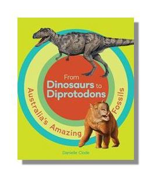

From Dinosaurs to Diprotodons: Australia's Amazing Fossils
Ever met a thingadonta or seen a fangaroo?
What about a gigantic titanosaur or a mighty diprotodon?
Come on an Aussie fossil adventure and explore prehistoric life down under. Travel around Australia visiting Australia's richest fossil sites to discover amazing and unique animals.
Danielle Clode, the award-winning author of Prehistoric giants: the megafauna of Australia, takes you to the best fossil sites so you can learn about the incredible animals that once roamed this ancient land.rings to life yet another aspect of the fascinating world of Australia’s prehistoric past and provides an accessible introduction to some of the amazing fauna, geology and fossils found in this part of the world.
Suitable for younger readers and pre-readers
Published by Museum Victoria
Available in paperback
Available from all good bookstores
Find your local bookstore Buy now Aust/NZ
Praise for the book
‘HIGHLY RECOMMENDED - ‘A great reference book for kids of any age wishing to know more’ —Mem Cap, CBCA Reading Time
‘From Dinosaurs to Diprotodons is packed full of dinosaur drawings, maps, and trivia — enough for even the most avid dinosaur buffs, and great for school projects’ —Sarah Steed, Kids Book Review
‘You could plan an entire summer adventure on Danielle Clode's hugely entertaining From Dinosaurs to Diprotodons' —Frances Atkinson, The Age
‘This book sets prehistory squarely in our own backyard and encourages children's personal research' Four stars —Katharine England, The Advertiser
‘This colourful, authoritative picture book is from the pen of one of Australia's foremost science writers . . . as well as remarkable illustrations' —Carmel Ballinger, Magpies Magazine
‘This exciting new title includes maps and guides to Australia's most amazing fossil sites. It features stunning illustrations of dinosaurs, megafauan and other inredible animals and fascinating facts about animal behaviour and biology' —Turn the Page, MamaMag